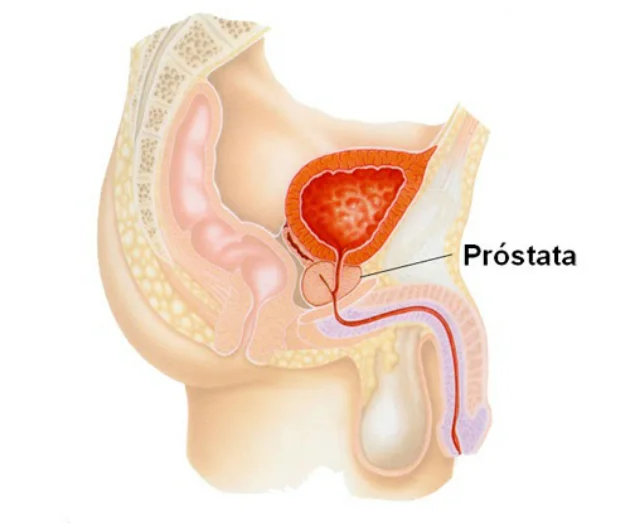

O Novembro Azul é uma campanha de conscientização realizada por diversas entidades no mês de novembro dirigida à sociedade e, em especial, aos homens, para conscientização a respeito de doenças masculinas, com ênfase na prevenção e no diagnóstico precoce do cancro de próstata.
O câncer de próstata, tipo mais comum entre os homens, é a causa de morte de 28,6% da população masculina que desenvolve neoplasias malignas. No Brasil, um homem morre a cada 38 minutos devido ao câncer de próstata, segundo os dados mais recentes do Instituto Nacional do Câncer (Inca).
O que é a próstata?
É uma glândula do sistema reprodutor masculino, que pesa cerca de 20 gramas, e se assemelha a uma castanha. Ela localiza-se abaixo da bexiga e sua principal função, juntamente com as vesículas seminais, é produzir o esperma.

Fonte: https://bvsms.saude.gov.br/novembro-azul-mes-mundial-de-combate-ao-cancer-de-prostata/